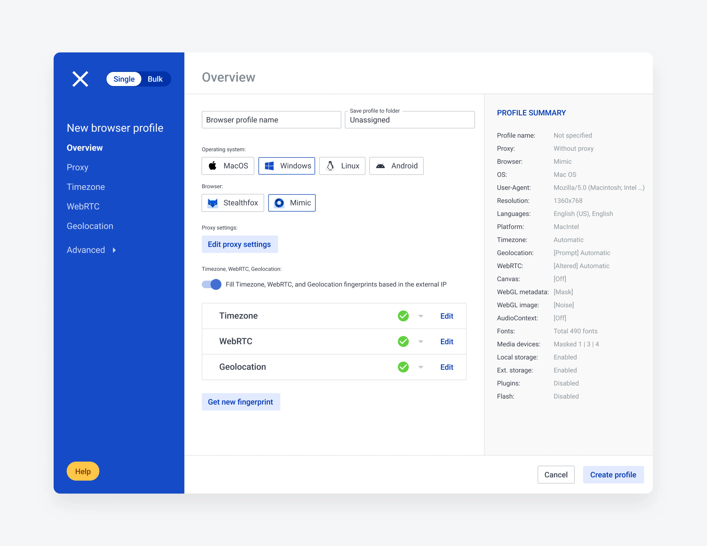
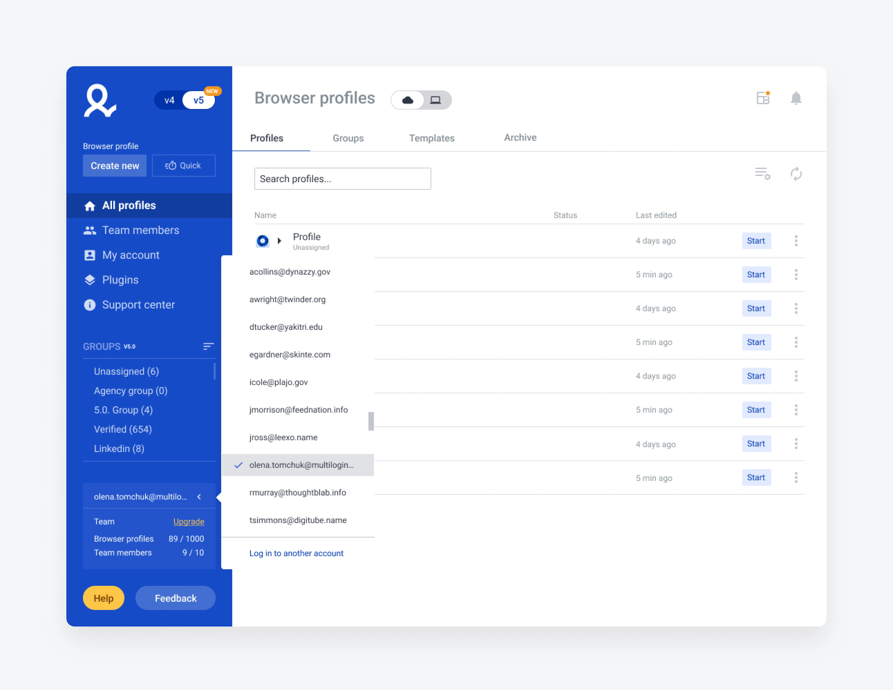
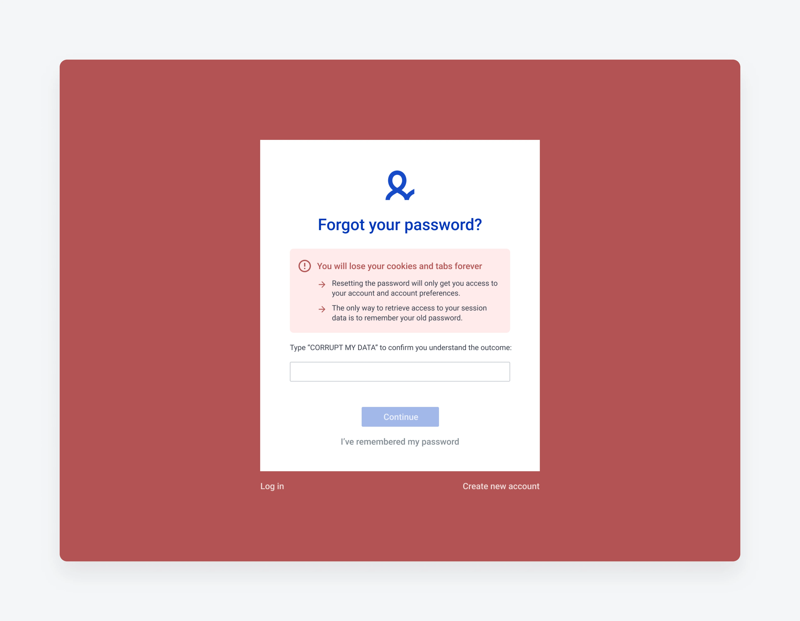
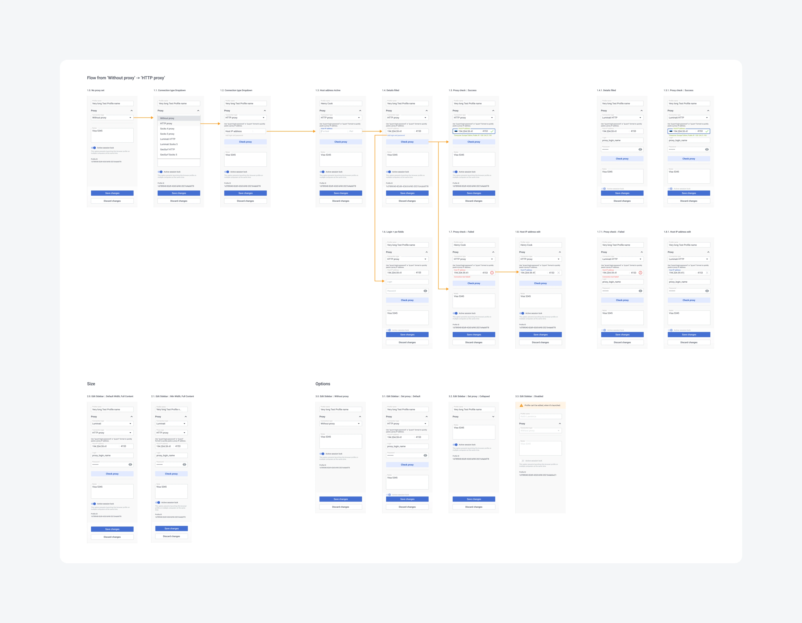
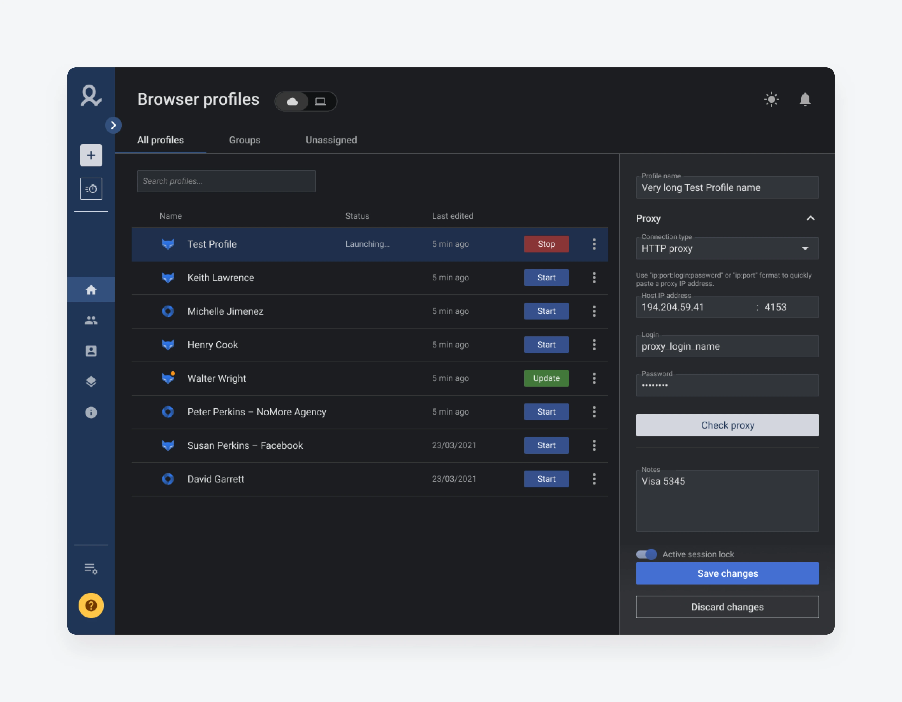
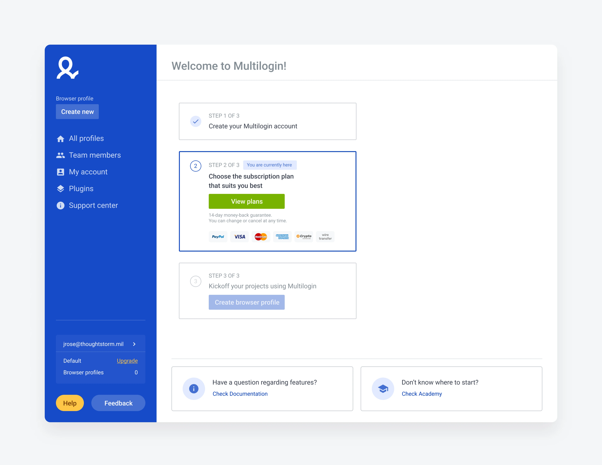

B2B anti-detect browser platform
Redesigning a power-user desktop app for growth and retention — and building the UX process, design system, and research habit it had been missing.

My role
Beyond shipping features, I reset how design worked here: I reorganized the UX process, built a lightweight design system to hold the product together, and set up continuous research so decisions came from users rather than opinions. The work below is five of those decisions — led by the two with the clearest measured impact.
Switching between accounts without logging out

A reset flow that makes the stakes impossible to miss

Quick-edit sidebar

Designing and shipping dark mode
A dark theme for the desktop app that stayed accessible and consistent with the existing light design. The real work was in the constraints: applying contrast and accessibility principles properly, and reconciling the gaps between what design specified and what the code actually did. The result gave users a comfortable experience in low-light environments.

Welcome page for activation
A focused redesign of the Welcome page aimed at lifting the registered-to-paid conversion ratio — guiding new users toward the first action that demonstrates the product's value.

What carried over
The two results that mattered most — the switcher's adoption and the 30% drop in resets — both came from research, not from a redesign brief. The durable win wasn't any single screen; it was leaving behind a design system and a continuous-research habit the team kept using after I'd moved on.